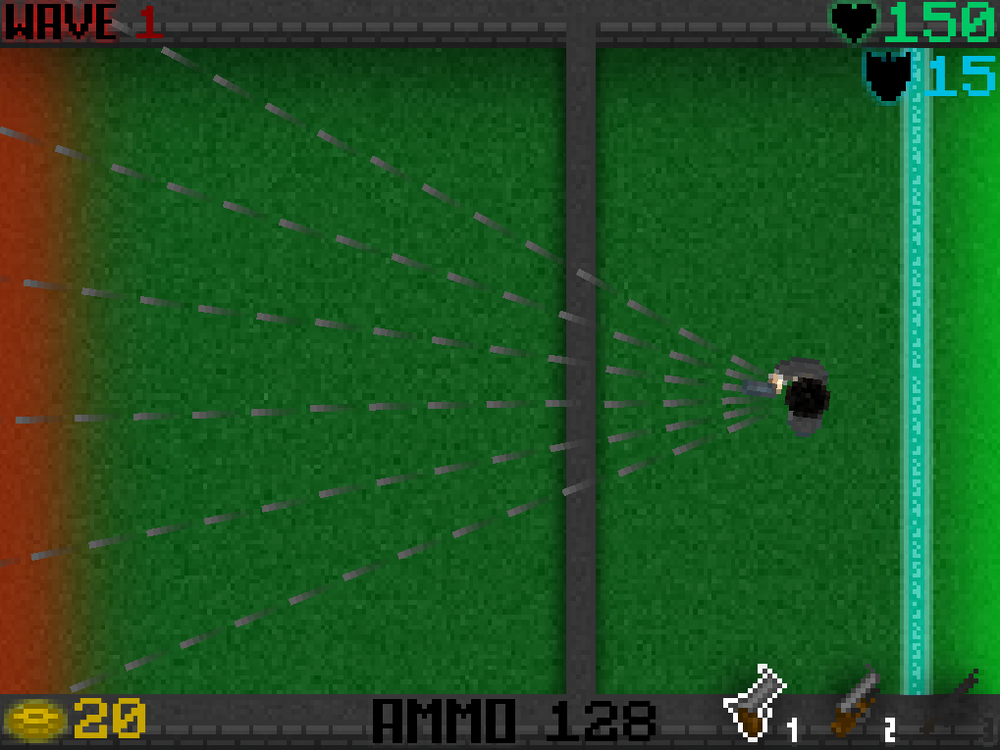

Overview
Elytron is an award winning, top-down, tower defence game where you must defend yourself from waves of beetles, which can vary in strength.
By defeating a beetle, you earn gold for the shop. The shop allows you to prepare for the next wave of beetles with more or stronger turrets, better weapons, or even a mine field. Find your own way to defeat the army of beetles, and challenge yourself however you like with a hard mode!

Controls
-
WASD or ARROW KEYS to move
-
NUMBER KEYS to change weapon
-
SPACEBAR or MOUSE LEFT CLICK use your weapon
-
R to reset position
-
P to pause
-
F1 - F4 for cheats
Extra Information
-
Difficulty modes determine damage dealt and shield presence
-
The shop is only accessible between waves
-
Victory is awarded once Wave 15 is defeated, however you may decide to continue playing
-
The shield takes the same amount of damage from every beetle
-
The shield is a temporary defence so it cannot be repaired
Boss Wave
Upon reaching wave 15, you must defeat the boss to win the game. After this, a victory screen is triggered.
Shop Menu
After each wave you have the opportunity to use the shop. The currency used is gold, which is gained from killing beetles. The purchase options are as labelled:
Turrets
Elytron offers a variety of 3 turrets with different strengths: The gun turret (dark grey), assault turret (ligt grey), and the laser turret (light grey and red).
Cheats
As this project was mainly just for fun, a variety of cheats are offered, such as the power gun. Press the function keys to see the other cheats
